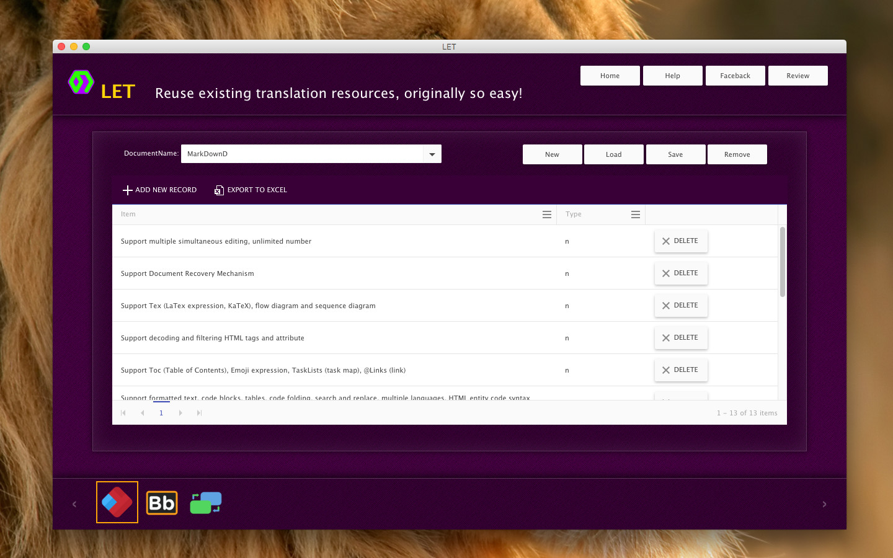
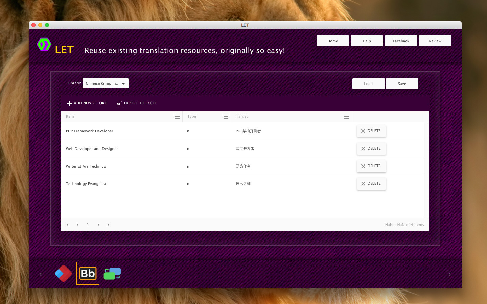
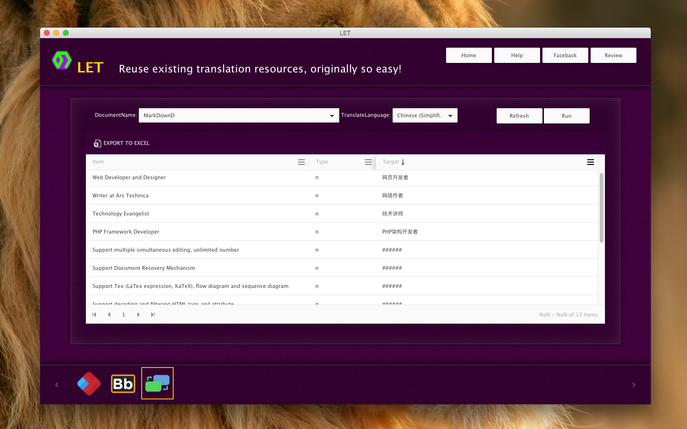

Download
Free | MacOS x 10.7.5 or later. Buy
$29.99 | MacOS x 10.7.5 or later. Apple app store
$39.99 | MacOS x 10.7.5 or later.
Free | MacOS x 10.7.5 or later. Buy
$29.99 | MacOS x 10.7.5 or later. Apple app store
$39.99 | MacOS x 10.7.5 or later.
LET Features
- Support Multi-language manager
- Support export to excel